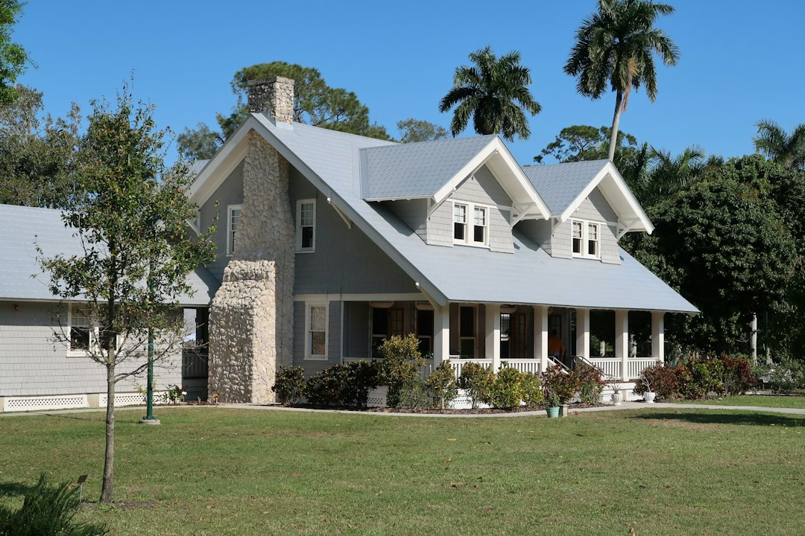

For Fort Myers homeowners, the grounded answer is inspection first: targeted repair may suit leaks, missing shingles, cracked tiles or worn flashing, while replacement is for an ageing roof or a system needing tear-off and re-roof. The published guide names 8 service categories and 15 local neighbourhood notes. Its only price figure is an indicative asphalt shingle replacement guide of $4.50 to $8.00 per square foot, with a firm estimate required after inspection.
For homeowners comparing roof repair fort myers options, the useful starting point is not a guess at cost, but a clear account of the leak, material, roof age and storm history.
Roof Repair Fort Myers Explained
Fort Myers Roofing presents the repair decision as something to make after a real inspection, not from a ceiling stain alone. That matters in Fort Myers because the same visible leak can come from storm damage, worn flashing, cracked tile, missing shingles or a roof system nearing the end of its life.
Useful first notes are plain: where water appears, whether it happens during downpours, whether recent wind was involved, and what roof material is above that part of the house. Asphalt shingle, concrete tile, clay tile, metal and low-slope membrane roofs do not lead to the same scope.
- Photograph the stain or outside damage before temporary work hides it.
- Ask what was checked at flashing, decking, underlayment and ventilation.
- Treat early figures as guides until the roof is inspected and priced in writing.
Repair Or Replacement Decision Points
A targeted repair fits when inspection finds limited damage, such as a leak, missing shingle, cracked tile or worn flashing. Replacement fits when the roof has run out of years or needs full tear-off and re-roof work from decking and underlayment through to a finished covering.
Material choice shapes the question. The published guide describes asphalt shingles as common locally and notes ventilation, heat and storm exposure. It also names concrete and clay tile work, standing-seam and metal panel roofing, and TPO, EPDM or modified bitumen for low-slope sections such as additions and lanais.
A related guide to roof repairs in Fort Myers follows the same local repair topic from a plural search angle.
What Is Local To Fort Myers And Lee County
The local conditions named in the guide are specific: relentless sun, summer downpours, salt air near the coast and the odd tropical system. Those factors do not prove that every roof needs replacement, but they do explain why inspection notes should go beyond the first broken or wet component.
Lee County roofing is also described as needing to meet Florida Building Code high-wind requirements. The guide tells homeowners to check a contractor licence at MyFloridaLicense.com before work begins. Put those two checks before colour, profile or product preference.
- Who this applies to: Fort Myers and Lee County homeowners with a fresh leak, storm damage or an ageing roof.
- Where locality matters: wind code compliance, coastal exposure, roof material and insurance documentation.
- What to avoid assuming: that one visible leak automatically means a whole-roof replacement.
Storm, Inspection And Insurance Records
The guide names storm damage and emergency tarping as a category, with temporary tarping and leak control after storms followed by documented assessment for permanent repair and any homeowner insurance claim. Keep the sequence clear: temporary control is not the same as final roof repair.
Inspection can also serve different moments. The published wording refers to pre-sale, post-storm and periodic inspections that check shingles, flashing, decking and ventilation, and may support a wind mitigation report for an insurer. Ask whether the written notes identify the cause, the affected roof area and any components that could change the final scope.
Quote Questions Before Work Starts
The guide gives one cost signal: asphalt shingle replacement in the area is commonly quoted around $4.50 to $8.00 per square foot, with tile and metal higher. It also says that number is indicative only. A firm estimate comes after a contractor walks the roof and puts scope, price and terms in writing.
When comparing roof repair fort myers quotes, separate the proposed action from the material. Ask whether the quote is for leak control, targeted repair, inspection only or replacement. For replacement, ask what assumptions sit behind decking, underlayment, flashing and ventilation. For repair, ask what finding would change the recommendation.
- Check the licence before work starts.
- Get the roof inspected and documented.
- Separate temporary tarping from permanent work.
- Confirm whether the written price is repair, replacement or inspection only.
- Keep the written estimate with storm or insurance records.
- Describe the problem. Write down where the leak or damage appears, when it started and whether it followed a storm.
- Identify the roof type. Confirm whether the roof is shingle, tile, metal or low-slope membrane before comparing repair options.
- Check licence and scope. Use the licence check named in the guide and ask for written scope, price and terms before work begins.
- Keep records. Store inspection notes, photos, tarping details and the written estimate with any insurance paperwork.
| Path | When it fits | Questions to ask |
|---|---|---|
| Targeted repair | Inspection finds limited damage such as leaks, missing shingles, cracked tiles or worn flashing | What caused the issue, what components are included, and what would change the scope? |
| Full replacement | The roof is ageing or needs tear-off and re-roof work from decking and underlayment upward | What material is proposed, what decking assumptions are included, and how is code compliance handled? |
| Storm tarping then assessment | Temporary control is needed after storm damage before permanent work is scoped | What was done temporarily, what permanent repair is recommended, and what documentation supports a claim? |
Common questions
Can a Fort Myers leak be repaired instead of replaced? Sometimes. The guide describes targeted repairs for leaks, missing shingles, cracked tiles and worn flashing, but says the decision should come from a real inspection.
What roof materials are named for local work? The guide names asphalt shingle, concrete tile, clay tile, standing-seam metal, metal panel, TPO, EPDM and modified bitumen work. The suitable option depends on the existing roof section and inspected scope.
Is the $4.50 to $8.00 figure a quote? No. It is an indicative market guide for asphalt shingle replacement per square foot, and the guide says a firm written estimate comes after the contractor walks the roof.
What should be checked before approving work? Check the contractor licence through MyFloridaLicense.com as the guide recommends. Then review the written scope, price and terms before work starts.
This guide covers repair, replacement, inspection, storm tarping, material choice and quote questions for Fort Myers and Lee County homeowners.